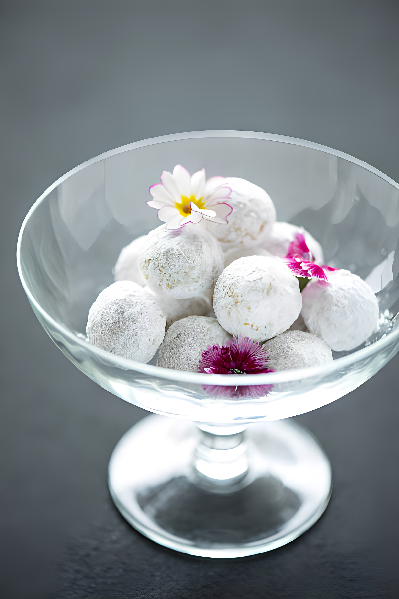

3/4 cup finely chopped nuts (walnuts or pecans work well)

Instructions
Preheat your oven to 400°F (200°C).
In a large bowl, cream together the softened butter, powdered sugar, and vanilla extract until light and fluffy.
In a separate bowl, whisk together the flour and salt. Gradually add this dry mixture to the creamed butter mixture, mixing well.
Fold in the finely chopped nuts until evenly distributed in the dough.
Shape the dough into 1-inch balls and place them on an ungreased baking sheet.
Bake in the preheated oven for about 10-12 minutes, or until the edges are lightly golden.
Allow the cookies to cool slightly on the baking sheet, then roll them in powdered sugar while they are still warm. Place them on a wire rack to cool completely.
Once cooled, roll the cookies in powdered sugar again for a snowy finish.